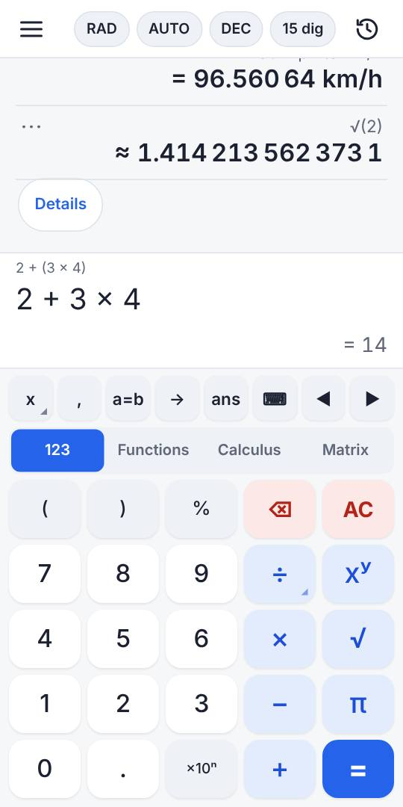
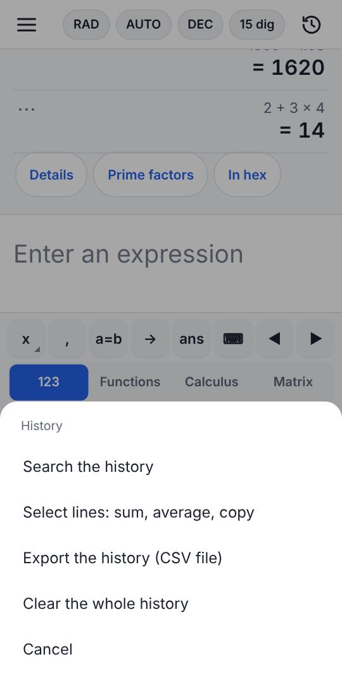
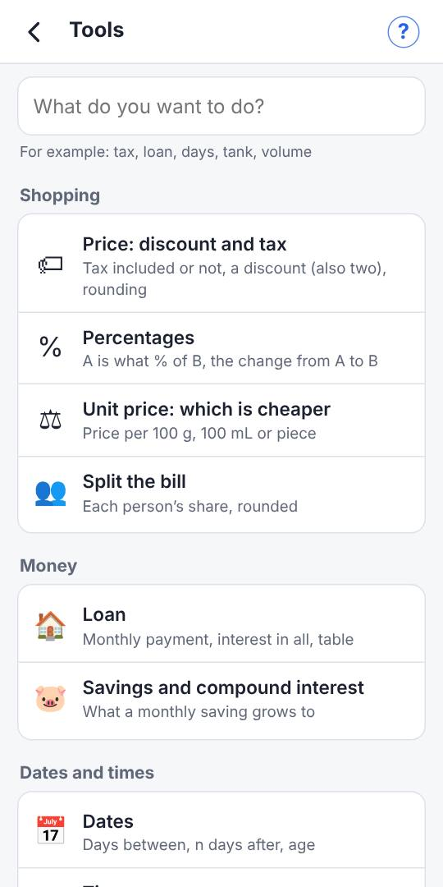
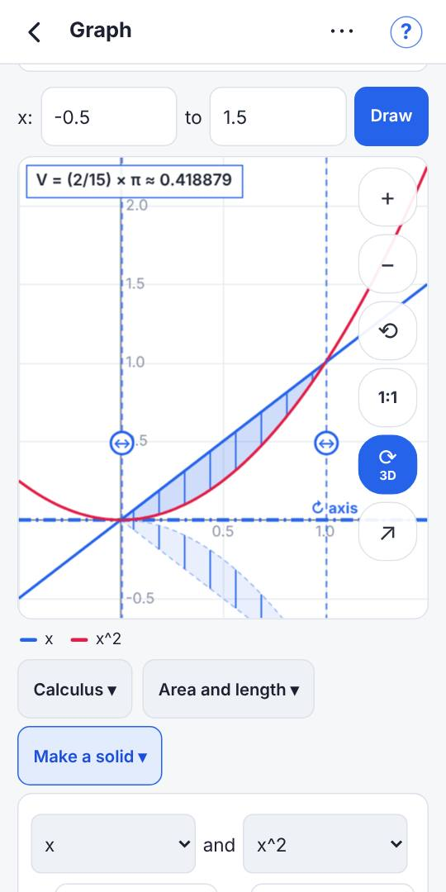

Introduction
What QCalc does
QCalc is a calculator where you type an expression as you would write it on paper and get the answer at once. The calculations are done by libqalculate, the engine of the desktop calculator Qalculate!.
- From arithmetic to fractions, roots, units, currencies, derivatives, integrals, equations and matrices, all in one line.
- When it can, the answer is exact (√2, π/2, 7/12), with a decimal approximation under it.
- Everyday calculations such as prices, loans, dates, conversions, statistics and tanks are in "Tools": type the numbers and the answer appears.
- 2D and 3D graphs, with areas, lengths and the volumes of solids of revolution.
- QCalc collects no personal data. It uses the internet only to download exchange rates.
The results are for reference. Do not use them where a mistake is not allowed, such as trade or certification, design and construction, or tax returns (notes of caution).
Your first three calculations
What it does Type an expression with the keys and press =: the answer goes into the history. While you type, the answer already shows under the input field.
- Open the app and type
2 + 3 × 4with the keys. "= 14" shows under the input field. - Press =. The expression and "= 14" go into the history, and the input field is empty again.
- Next type
60 mph to km/h("to" is on the → key). "= 96.560 64 km/h" shows. - The third one is
sqrt(8), also on the √ key: "= 2√2" and under it "≈ 2.828 427 124 746 19", the exact value and the approximation on two lines.
1/3 + 1/4 → = 7/12, then ≈ 0.583 333 333 333 333
Tap an answer in the history: it goes into the input field at the cursor (Tap to insert a result).
- The letter x is a variable, not "times". Multiply with the × key (or *).
New in 1.16.0
- Stocks and investing: Stocks and investing in Tools has the profit and loss of a stock with its tax (tax-free too), the average cost, the maintenance ratio and margin-call price of a margin account, the position size from a stop, yield, PER, PBR and compound growth, margin interest and lending fees by the day, and foreign stocks in your money. Only what you type is used (Stocks and investing).
- Line numbers, #3 and tables in the notes: the lines have numbers, and #3 uses the result of line 3; the numbers follow when lines are inserted, deleted or moved. In the table mode (QCalc Pro): formula columns (Amount = Qty × Price), the total and the average of each column, CSV files read and saved (Line numbers and #3, Table mode).
- Fixed: in Shapes and Tanks the weight is the last row of the results (without a unit, a tap chooses one). In the 3D graph, the sphere and the doughnut are one solid colored by height from the first drawing.
- Your variables and functions: the variables and functions you set with
k := 2and the like, with their values, on one screen. Open it with the button Variables above the input field; a tap on a name puts it into the input field, and ⋯ changes the value or the name or deletes it (each can be undone) (Your variables and functions). - Probability distributions: Distributions in Statistics gives the probability of a range, the density and the quantiles of the normal, binomial, Poisson, t and χ² distributions, with the range shaded in a graph (Probability distributions).
- Histogram and box plot: for one column of data, a histogram (with a bin width you can change) and a box plot (outliers as points) (Statistics).
- Regression curves and CSV: for two columns, choose a curve of degree 2 to 4, an exponential, a logarithmic or a power curve (other than the line: QCalc Pro). Read a CSV file reads a column of a CSV file (Statistics).
- Hints for the arguments of functions: after a function name and "(", its arguments (the current one in bold), what it does and an example show under the input field. For about 60 functions; ✕ closes it (Hints for the arguments).
- Tap to insert a result: a tap on an answer in the history puts it at the cursor, as a click on a cell does in a spreadsheet. Another tap before you type anything replaces it, and right after a number a visible × goes in first. The lines used get colored marks. Answers with √ or π go in in their exact form, not as rounded decimals (Tap to insert a result).
- Line numbers and #12 in the history: the lines of the history have numbers, and
#12in an expression is the answer of line 12; editing line 12 can work out again the lines that use #12. Select: sum and average in ⋯ starts with that line and shows the sum at once, and touching and holding a line chooses a range. Copy as a table copies the expressions and answers as two columns for a spreadsheet (Line numbers and #12, Adding up lines). A tap on the number of a line puts #12 in, and Copy as a table can copy the answers only (1 column). - The forms of answers: an expression of decimals only keeps a decimal answer (123456.789, 2.5, 0.5; the fraction with As a fraction), and an answer has two forms at most (10/4 = 5/2 = 2.5) (Reading the answer).
- Editing a line: the line and its answer stay in sight, and the lines worked out again flash for a moment. A line keeps the angle unit it was worked out with and is edited with it. AC stops editing too, and Cancel in the question about the lines below goes back to editing (Editing a line of the history).
- Other fixes: while "Volume and surface" is open in the 3D graph, the legend shows the color of the solid being measured. Money rounds a half cent up correctly (some sums were one cent short). Results are copied without digit grouping.
nPr(5, 2)andnCr(5, 2)work. More messages of the engine (the note on 6/2(1+2) and others) are in your language. The converter leaves out rarely used units (they can still be typed).
What is new in 1.15.0
- Easier results: results have 15 significant digits, in groups of three. Phones that still had the earlier defaults (10 digits, no groups) change once with this version. Precision (significant digits) and Digit grouping (1,000) in the Settings set them back (Reading the answer).
- Reading into the calculation notes: More ▾ → Open a file in the notes reads a .txt or .csv file, and text or a file sent with “Share” → QCalc from another app is taken in too (Calculation notes).
- Taylor series: taylor on the Calculus page gives the Taylor polynomial about a center up to a degree (exact coefficients;
taylor(sin(x), x, 0, 5)can be typed too). Compare in a graph draws it with the function (Derivatives, integrals, limits, sums). - Three new kinds of 2D graph: parametric (
x = cos(t), y = sin(2t)), polar (r = 1 + cos(θ)) and implicit (x^2 + y^2 = 1) lines, told from their form or chosen at the top; their length and area (polar), and new samples: a cardioid, a rose, a Lissajous curve and more (2D graph). - Sliders: letters such as a and b in the formulas of a graph get sliders, and moving one changes the graph at once; ▶ keeps it moving. Free in 2D; the sliders in 3D and the GIF of a slider are QCalc Pro (2D graph).
- Next steps: buttons under the newest answer for details, a graph, factoring, the derivative and more; a button's calculation becomes a new line (Reading answers).
- Details: the exact value, decimal, fraction, bases and prime factors of an answer, or the graph, zeros, derivative, integral and Taylor series of an expression, on one sheet (Reading answers).
- Two lines: an exact result with its approximation shows "= exact" on one line and "≈ approximation" on the next. Fractions and roots are drawn in the same letters as the other results.
- Numbers: no ending zeros in approximations; very large or small numbers as 1.606 938 × 10⁶⁰ (copied as 1.606938E60); whole numbers and decimals that end are shown in full up to 60 digits, even beyond the precision (for example 30!).
- Long results and units: a result too long for one line gets smaller letters, and only then breaks between groups of three digits; a result with units stays on one line (m/s).
- The history: its expressions are written with ×, √, π and raised powers (2^10 → 2¹⁰).
- Editing a line of the history: tap the expression of a line to edit it in place; = puts the new answer there, and the lines below can be worked out again (Editing a line of the history).
- The precision at hand: the row at the top shows the precision (e.g. 15 dig); press it to choose 10, 15, 20, 30, 50, 100 or Other…, and the expression being typed is worked out again at once. ⋯ → Work it out with other digits in the history shows one line with other digits (Reading the answer).
- 3D close to real things: 3D is drawn by the device's GPU (WebGL 2), with real light and shadows: the 3D graph, ⟳ 3D in the 2D graph, the solids and tanks of the shapes, and the solid from a profile (3D graph).
- See-through: See-through lets you see through surfaces and solids: their back and inner faces and where two surfaces meet. The slider sets how opaque, and moving it while the see-through is off turns it on; with two things or more, choose which are see-through (for example only a tank's Container).
- Turn it any way: one finger turns 3D in any direction, over the top and under the bottom too. The cube button gives From the front, From above or From the side at once.
- Materials: a solid looks like the material chosen in Material (density), and a tank's liquid like water, seawater, kerosene or gasoline. New materials: stainless steel, aluminium, copper, brass, wood, PLA, ABS and acrylic.
- 3D once for free: without QCalc Pro, 3D can be opened once for free (What is free).
- Rate on Google Play: Rate on Google Play in About this app opens QCalc's page in Google Play for your stars and review.
- The range of a graph: a and b typed right after drawing a graph are no longer replaced by the range the app finds (Area and length).
What is new in 1.13.0
- Digits shown by each tool: each tool shows its results with its own number of digits. Open Digits shown… from ⋯ at the right of the tool's title (Digits shown by each tool).
- Three ways to choose: Recommended (automatic), Significant digits or Decimals; set the number with + and −.
- Trailing zeros: with digits chosen, Keep (2.50) or Drop (2.5).
- A mark: a tool that does not use its default digits has the mark "changed" in ⋯ → Digits shown… and in the settings' list.
- Back to the defaults: Back to the default (recommended) for one tool; All back to the default (recommended) under Digits shown by each tool in the settings for every tool.
- Money: amounts of money have the decimals of the currency of the phone's region (none for yen, two for dollars). The region decides, not the language (euros on a phone in Germany, in any language).
What is new in 1.12.0
- Clearer: the menu has eight items, and the tools are together in Tools. In every tool, tap an example to fill it in; the answer appears at once.
- Everyday tools: Price: discount and tax, Percentages, Unit price: which is cheaper, Split the bill, Loan, Savings and compound interest, Dates, Times, Convert units and currencies, Statistics, Calculation notes.
- Number format: choose 1,234.5, 1.234,5 or 1 234,5 (Number format).
- History: search, pin with a star, short notes, the sum of the lines you choose; memory keys (History and memory).
- From 2D to 3D: ⟳ 3D turns a region of the graph into a solid of revolution and shows it in 3D at once (3D: QCalc Pro); also solids with known cross sections, the lines of the method and the theorem of Pappus (Make a solid).
- Open quickly: a widget, a quick settings tile and shortcuts on the icon (Widget, tile and shortcuts).
- Sharing: pictures of graphs, and moving GIFs of 3D graphs (Sharing).
- Solids and tanks in 3D: ⟳ 3D at the top left of the picture in Solids and Tanks shows the shape in 3D with the sizes typed; in a tank the level can be dragged to see the amount (Solids and tanks in 3D; 3D is QCalc Pro).
- Digits of the results: the digits of the results of Shapes, Tanks and the like, as decimal places or significant digits, for each kind of quantity, with the rounding; every % has one decimal at first (Digits shown by each tool).
- QCalc Pro: the CSV of tables, tank heads with quick-reference tables, solids from a profile, STL files, more calculation notes and more (QCalc Pro).
- This manual: it is inside the app. The "?" at the top right of a tool or a panel opens its section.
Examples and tips in the app
What it does Examples and tips in the menu has expressions that go into the input field with one tap, and tips. User manual at its top opens this manual.
- Press ☰ at the top left and choose Examples and tips.
- Tap an expression. The panel closes and the expression is in the input field.
- Press = to calculate it.
This manual can be read without the internet. The detailed version with photos (web) and the PDF open from the links at its top.
The screen
| No. | Name | What it is for |
|---|---|---|
| 1 | ☰ (menu) | Opens the tools, the graphs, the lists, the settings and more |
| 2 | Chips | Switch the angle unit (RAD, DEG), exact or approximate (EXACT and others), decimal or hexadecimal, with one tap; “15 dig” lets you choose the precision |
| 3 | 🕘 (history menu) | Search the history, select lines, export, clear |
| 4 | History | The expressions and their answers, the newest at the bottom |
| 5 | Input field | Where you type. The answer while you type (the preview) shows under it |
| 6 | Key pages | Switch between the four pages 123, Functions, Calculus and Matrix |
| 7 | Keys | Digits, operators and functions |
| 8 | = key | Calculates and keeps the expression and the answer in the history |

On a phone with a large text size, the top row of keys (x, ans, the arrows, ⌨) is hidden. ⌨ at the right end of the tabs shows it.
Basic calculations
Typing an expression
What it does Type an expression as a math book writes it, with the keys or, after ⌨, with the phone's keyboard.
- Type the expression with the digit and operator keys. Parentheses are on the ( ) keys.
- A function key of the Functions page (sin, log, √ and others) types "sin(" and the like.
- Write units and currencies by name (
5 km,100 USD). Convert with "to" (5 km to mi). - Press = to calculate.
2^10 → = 1024, 5! → = 120, sin(30°) → = 1/2
÷ × + and the like in an empty input field continue from the last answer, "ans".
A column or a table copied in a spreadsheet (Excel, Google Sheets) — two or more values on lines or with tabs — pasted into the input field asks what to do: add them up with +, put them into the calculation notes as lines, use them as data of the statistics, or make a matrix (two or more columns). Cells of words only (headings) are left out. One line pastes as it is.
Make them lines of the history (worked out one by one) takes one expression from each row and works them out from the top as if each were typed and = pressed, adding them to the history (from QCalc's Copy as a table, the column of the expressions). Rows that cannot be worked out are left out and named; ⤶ Undo takes all the lines put in away.
- Parentheses that do not pair up give an error. The message says what to fix.
Reading the answer: exact, approximate, fractions
What it does An answer that starts with "=" is exact; one that starts with "≈" is approximate. Answers with fractions or √ also show the decimal, on the next line.
1/3 + 1/4→= 7/12, then≈ 0.583 333 333 333 333(the fraction stays, with its decimal)sqrt(8)→= 2√2, then≈ 2.828 427 124 746 1930!→= 265,252,859,812,191,058,636,308,480,000,000(whole numbers in full up to 60 digits)2^200→≈ 1.606 938 044 258 99 × 10⁶⁰(a very large number)2.5,0.1 + 0.2→= 2.5,= 0.3(an expression of decimals only has a decimal answer; As a fraction shows the fraction)10/4→= 5/2 = 2.5(two forms at most)
- The chip at the top switches between EXACT, approximate and automatic.
- The precision (15 digits by default) can be changed with the chip “15 dig” in the row at the top. It offers 10, 15, 20, 30, 50, 100 and Other… (type a number); the answer of the expression being typed is worked out again at once, and the answers in the history stay as they are. Precision (significant digits) in Settings changes it too. Results are shown with their digits in groups of three (Digit grouping (1,000) turns it off).
- To see one line of the history with more digits, choose 30, 50, 100 or Other… in its ⋯ → Work it out with other digits. The answer shows in a sheet with Put the expression into the input field, Keep it in the history and Copy the result. The precision of the settings and the line stay as they are.
Pro This is a QCalc Pro feature. Up to 1000 digits are free. More than 1000, up to 200000 digits, is a QCalc Pro feature.
A very long answer scrolls in the history so that every digit can be read; copying it copies every digit, without digit grouping.
- Under the newest answer, buttons for what is often done next (6 at most): for an expression in x Details · Graph · Factor · Derivative · Integral · Solve = 0; for a number Details, As a fraction, Scientific (an integer: Prime factors, In hex); with a unit Convert…; for a matrix Determinant, Inverse, Eigenvalues, Transpose. A button's calculation becomes a new line of the history.
- Details (or ⋯ → Details) shows the other forms of the answer together: for a number the exact value, the decimal, the fraction, the mixed fraction and the scientific notation (an integer in bases 2, 8 and 16 and its prime factors; with a unit, other units); for an expression in x a small graph, the zeros, the derivative, the integral, the Taylor series and the factored form. Tap a row for Put the expression in the field, Keep it in the history or Copy result.
Without these buttons: Settings → Suggest the next steps under the newest answer off.
Deleting and undoing
What it does ⌫ deletes one character, AC empties the input field. Right after that, Undo above the input field brings it back.
- ⌫ deletes the character before the cursor; hold it to keep deleting.
- AC empties the input field, and Undo shows above it.
- Undo brings the expression back.
A line deleted from the history can also be brought back for a few seconds with Undo at the bottom of the screen.
Number format: the decimal sign
What it does Choose whether the decimal sign is "." or "," and how digits are grouped. At first QCalc writes numbers as your phone's region does.
- Open Settings.
- In Number format, choose Automatic, 1,234.5, 1.234,5 or 1 234,5.
- What you type and what you see follow the format you chose.
With 1.234,5, type two and a half as 2,5: 2,5 + 3,75 → = 6,25
With a decimal comma, separate the arguments of a function with ";": max(1,5; 2).
- Typing
1.5with a decimal comma gives an error; the message shows the right way to write it.
History and memory
What it does The expressions and answers stay in the history, up to 300 lines. 🕘 at the top right searches, adds up chosen lines, exports and clears.
- A line works in two ways, by where you tap it: tap its answer to use the value (= makes a new line; Tap to insert a result); tap its expression to edit the line (= replaces it; Editing a line of the history).
- ⋯ at the left of a line offers ☆ Pin at the top and Add a short note.
- 🕘 offers Search the history, Select lines: sum, average, copy, Export the history (CSV file) and Clear the whole history.

Lines pinned with a star stay when the history is full.
Tap to insert a result
What it does A tap on an answer in the history puts it into the input field at the cursor, as a click on a cell does while you type a formula in a spreadsheet.
- When the field is empty, or right after a calculation, the answer simply goes in.
- An answer tapped into the empty field shows a pale band above the field, “Making a new line from the answer of #51”: = makes a new line. To change that line instead, press Edit this line in the band (also after changing numbers in the field: the line is then edited with the field as it is). The band also goes with ✕, AC or an empty field.
- Another tap on an answer before you type anything replaces the one tapped before.
- After an operator such as + or ×, the answer goes in after it. Right after a number, a letter or ")", a visible × goes in first.
- The lines used in the expression get colored marks; deleting the answer from the field removes its mark.
Tap the line 120, press ×, tap the line 3 → the field holds 120 × 3, and the answer is = 360
Answers with √ or π go in in their exact form, not as rounded decimals: the answer of sqrt(8) goes in as (2 × √(2)), so its square is = 8. An answer without an exact form goes in with all the digits of the precision.
To use a line by its number, choose "Insert #12" in its ⋯; to copy an answer, Copy result in ⋯ (copied without digit grouping).
A tap on the number at the left of a line (#12) puts #12 into the expression instead of the value, as pointing at a cell in a spreadsheet (Line numbers and #12).
Editing a line of the history
What it does Tap the expression of a line (the small one above its answer), or Edit expression in its ⋯, to edit that line. The expression goes into the input field, with the band "Editing #12" above it (12: the number of the line). The history scrolls so that the line and its answer stay in sight.
- Change the expression and press =. The line gets the new expression and answer in the same place. ★ and the short note stay, and the menu ⋯ shows the time of the change beside the time of the line.
- While you type, the line shows the expression and its new answer in its place, with the line as it was in small grey letters below it (“Before: …”). A line can be edited in the line itself or in the field below: tap the expression in the line to put the caret there, and the keys, ◀ ▶, ⌫, ⌨, pasting and taps on other answers work there; tap the field to go on typing there. What is typed in one shows at once in the other. The history itself changes only when you press =.
- "Edited" and Undo show for a few seconds. Undo brings back the expression and answer as they were.
- When the lines below use the answer of this line (ans or #12) or a variable it defines, the app asks whether to work them out again ("Also the 2 lines below") or Only this line. The lines worked out again flash for a moment, and Undo takes them back too. With Only this line, the lines below get a note that their answer may be out of date. Cancel changes nothing: the new expression stays in the field and you go on editing.
- To work it out as a new line below instead, press As a new line in the band, then =. ✕ in the band, AC or the back button stops editing and changes nothing.
A line keeps the angle unit (degrees, radians) it was worked out with. Editing it, working out the lines below again and other digits use that unit, and the band says so. Lines worked out before 1.16 use the unit set now; with a function of angles the band says so.
The other settings (base and the like) are those of now. A line worked out in another base says so in the band and gets the base of now.
Deleting the line being edited, or clearing the history, ends the editing; the expression in the field is then worked out as a new line.
A tap on the answer of a line puts it into the input field (Tap to insert a result).
Line numbers and #12
What it does Every line of the history has a number (the small "#12" under its ⋯). #12 in an expression is the answer of line 12, as a reference to a cell in a spreadsheet.
- Choose "Insert #12 (this line by its number)" in the ⋯ of a line:
#12goes into the input field. Typing#and the number works too. - The answer with
#12shows under the input field while you type. - A number belongs to its line: deleting other lines does not change it, and no number is given twice.
- When line 12 is edited, the app asks whether to work out again the lines below that use
#12(Editing a line of the history).
Line 12 is = 250 and line 13 is = 3: #12 × #13 → = 750
- The number of a deleted line, or of a line below the one being edited, cannot be used; a message says so. When a line used is deleted, a note under the line says so.
It is written as #3 is in the notes (Line numbers and #3).
Pins, notes and search
- Choose ☆ Pin at the top in the ⋯ of a line: it moves up with the other pinned lines.
- Choose Add a short note in ⋯ and write a short note. It shows above the expression.
- In 🕘, Search the history shows only the lines whose expression, answer or note has the words you type.
A line noted "rent" is found by searching for "rent".
Spread or pinch two fingers on the history or on the input field to make its text larger or smaller (each on its own; Text size: history and Text size: input field and result in the settings set it back). For one line, Text size of this line in its ⋯.
Adding up lines
- Choose Select lines: sum, average, copy in 🕘. Select: sum and average in the ⋯ of a line starts with that line chosen and shows the sum at once.
- Tap the lines to add up. Touching and holding a line chooses all the lines from the one chosen last to it.
- The sum and the average show below, with their unit when the units agree. Lines shown as decimals add up to a decimal. Copy copies the lines (without digit grouping).
- Copy as a table copies the expressions and answers of the chosen lines in two columns, with a tab between them: pasted into a spreadsheet, they make a column of expressions and a column of answers.
- Copy as a table lets you choose "Expression and answer (2 columns)" or "Answers only (1 column)"; the one chosen last comes first.
Copy as a table is free. Saving the whole history as a CSV file (Exporting the history) is a QCalc Pro feature.
- Lines in different units (m and kg) cannot be added; the reason is shown.
Exporting the history (CSV)
Pro This is a QCalc Pro feature.
What it does Saves the history as a CSV file that spreadsheets can open.
- Choose Export the history (CSV file) in 🕘.
- Choose where to save it on Android's save screen.
To paste only the chosen lines into a spreadsheet, use Copy as a table (Adding up lines).
Memory keys (M+ M− MR MC)
What it does The memory keys of a pocket calculator. The value is kept in its exact form.
- Open More settings in Settings and turn on Show the memory keys (M+ M− MR MC).
- With an answer shown, M+ adds it to the memory and M− subtracts it.
- MR puts the memory into the input field; MC clears it.
Keys and typing help
The four pages of keys
What it does The keys are on four pages, switched with the tabs above them.
| Page | Main keys |
|---|---|
| 123 | Digits, + − × ÷, parentheses, %, ^, √ |
| Functions | sin, cos, tan, log, ln, absolute value, factorial and more |
| Calculus | Derivative d/dx, integral ∫, limit lim, sum Σ, product Π, equations |
| Matrix | Matrix ▦, determinant det, transpose, inverse |
When you do not know the name of a function, look in Lists: functions, units, constants (Lists).
To see more of the history, fold the keys away with ⌄ at the right end of the tabs, or swipe down on the row of tabs. ⌃, a swipe up or a tap on the input field brings them back (they are out again when the app is opened again).
Boxes □ (the forms)
What it does The integral and limit keys open a form with boxes □. Fill in the boxes and the expression is made.
- Press ∫ on the Calculus page.
- Type the function, the lower and the upper limit. Next box ▶ moves to the next box.
- The answer shows below. = keeps it in the history.
The ⋯ of the form has Clear all boxes and How to use this form ›.
Suggestions
What it does While you type, suggestions show under the input field: after "to" the units to convert to; with the keyboard, the names of functions and units.
- Type
5 km to: mi, m, ft and others are suggested. - Tap one to type it.
Hints for the arguments
What it does After a function name and "(", its arguments, what it does and an example show where the suggestions are (under the input field, above the keys). The argument you are typing is in bold.
- Type
round(: "round(value, [decimals])" shows, with the value in bold. - After ",", the next argument (the decimals) is in bold. An argument in [ ] can be left out.
- ✕ on the right closes the hint of that function. Show the arguments of a function while typing in Settings turns the hints off.
round(3.14159, 2) → 3.14 (as in the example of the hint)
About 60 functions have hints: trigonometry, logarithms, roots, rounding, remainders, the greatest common divisor, sums, derivatives, integrals, limits, equations, Taylor series, matrices, statistics and distributions. A hint only reads the input field: it never changes the expression.
Writing functions, units and currencies
What it does Expressions are written as in Qalculate!. The common ways:
| Write | Meaning |
|---|---|
sqrt(x), √x | Square root |
x^2 | Power |
5 km to mi | Convert a unit |
100 USD to EUR | Convert a currency (with the exchange rates) |
solve(x^2 − 5x + 6 = 0) | Solve an equation |
diff(x^3) | Derivative |
integrate(x^2, 0, 1) | Definite integral |
integrate(x^2, x), sum(k, k, 1, 10) | Indefinite integral, sum. With the variable second, it is read in the order integrate(expression, lower limit, upper limit, variable) |
5!, (5!)! | factorial (5 × 4 × 3 × 2 × 1), a factorial of a factorial |
9!!, 9!!! | double factorial (9 × 7 × 5 × 3 × 1), multifactorial (9 × 6 × 3); "!!" is not a factorial taken twice |
ans | The last answer |
Ten traditional Japanese units (tsubo, shaku, shō, kan and others) work too: 30 tsubo to m^2.
Lists: functions, units, constants, your definitions
What it does Lists: functions, units, constants in the menu has four tabs: functions, units and currencies, variables and constants, and your own definitions, each with a search.
- Open Lists: functions, units, constants from ☰.
- Choose a tab and type part of a name in the box at the top.
- Tap an item to read about it; Insert puts it into the input field.
The tab of your own definitions is the list of your variables and functions (Your variables and functions). Variables (r = 5 cm) and functions saved with the fields at its bottom are kept for the next time.
Your variables and functions
What it does The variables you set with k := 2 or r = 5 cm and the functions you set with f(x) := x^2 + 1, with their values, on one screen. When you have at least one, a button such as Variables 2 (the number of variables and functions) is above the input field.
- Press the button Variables above the input field. The tab My own of Lists: functions, units, constants in the menu is the same screen.
- The variables come first, with their values. A variable set to an expression shows the value worked out too (w = 3 k = 6).
- Tap a name to put it into the input field (a function with the caret between its parentheses).
- ⋯ on the right: Change the value (Change the expression for a function), Rename or Delete. Each can be taken back with Undo right after.
k := 2 → Variables → ⋯ of k → Change the value → 3. Now k + 1 is 4.
What := or = sets is marked "temporary" and is gone when the app is closed. What you save with Save variable in the fields at the bottom stays. A change of the value or the name keeps it temporary or saved.
The names in the calculation notes (rent = 85000 JPY) work only in their memo and are not variables of the calculator. They are listed at the bottom, memo by memo; a tap opens the memo at that line.
- A name that QCalc already uses (m for the meter, pi …) cannot be given: choose another.
Currencies and exchange rates
What it does Currencies convert like 100 USD to EUR. The exchange rates are updated by themselves when the app is opened (when it starts or when you come back to it; an internet connection is needed). While roaming abroad or in Data Saver they are not updated by themselves; press Update now when you need new rates.
- To update them now, press Update exchange rates now in Settings.
- The time of the last update is on the same row.
- Without the internet the rates cannot be updated; the last ones are used.
The prices of Bitcoin (BTC) and of gold (XAU), silver (XAG), platinum (XPT) and palladium (XPD) are updated with the exchange rates, too.
The rates are kept on the device, so where there is no internet you can still convert with the last rates. Opening the app once before a trip is a good idea.
The physical constants are the CODATA 2022 values built into the calculation engine; they are not taken from the internet. New recommended values come with updates of the app.
Tools
Finding a tool
What it does Tools in the menu has the everyday tools and those for shapes, volumes and data. Search by what you want to do.
- "?": opens this manual at the tool
- Examples: a tap fills them in
- Boxes: type the numbers (a grey number is an example)
- Results: a tap puts the expression into the input field, keeps the result in the history or copies it
- A line of caution (tools for money or safety)
- One line of explanation
- Open Tools from ☰.
- Type what you want to do in the box at the top, such as "loan", "tank" or "mean".
- Tap the tool.
- Tap an example or type the numbers. The answer appears at once.

The tools used recently come first. Open QCalc quickly at the bottom adds the widget or the tile.
Price: discount and tax
What it does The price with or without tax, one or two discounts, and how to round.
- Open Price: discount and tax in Tools.
- Type the price, the discount (%) and the tax rate.
- Choose whether the price includes tax, and how to round.

1500 with 10% off and tax 8% → 1,458 with tax (1,350 before tax, tax 108)
- To find the price before tax from a price with tax, choose "with tax" first.
Percentages
What it does A is what percent of B, and the change from A to B in percent.
- Open Percentages and choose what to work out.
- Type A and B.
30 of 120 → 25 %. From 80 to 100 → up 25 %
Unit price: which is cheaper
What it does Compares the price per 100 g (100 mL, one piece) of two products.
- Open Unit price: which is cheaper.
- Type the price and the amount (500 g, 1 kg) of A and B.
298 for 500 g and 498 for 1 kg → B is cheaper (59.6 and 49.8 per 100 g, 16.4 % less)
Split the bill
What it does Each person's share, rounded as you choose.
- Open Split the bill and type the total and the number of people.
- Choose rounding up or down.
10000 for 3 → each 3,333.34 (rounded up; 0.02 too much)
Loan
What it does The monthly payment, the interest in all and the repayment table, with equal payments or equal principal.
- Open Loan.
- Type the amount, the yearly rate and the years.
- Choose how it is repaid.
- Open Payments, month by month for the table.

30,000,000 at 1 % for 35 years (equal payments) → 84,685.71 a month, interest in all 5,567,998.07
Pro This is a QCalc Pro feature. Saving the table as a CSV file is a QCalc Pro feature (showing and copying it are free).
- Typing 0.01 for 1 % gives 0.01 %. Type the number of percent.
Savings and compound interest
What it does What a monthly saving or a sum grows to with compound interest.
- Open Savings and compound interest and type the monthly amount (or the starting sum), the yearly rate and the years.
30,000 a month, 3 %, 20 years → 9,849,059.94 (put in 7,200,000; interest 2,649,059.94)
Stocks and investing
What it does Profit and loss with the tax, the average cost, the maintenance ratio of a margin account and its margin call, the position size from a stop, yields, PER, PBR and compound growth, margin interest and lending fees, and foreign stocks in your money. No prices are fetched: everything comes from the numbers you type.
- In Tools, choose a tool under Stocks and investing.
- Tap an example or type the numbers. The results come at once.
- Tap a result to put its expression into the input field, keep it in the history or copy it. ⋯ at the top right changes the digits shown.
A calculation for reference, not investment advice. Brokers may count tax and margin differently.
Pro This is a QCalc Pro feature. The maintenance ratio and margin call, the position size from a stop and the interest and lending fee by the day are QCalc Pro features. Profit and loss, average cost, yield/PER/PBR/growth and foreign stocks are free.
Stock profit and loss
What it does From the prices bought and sold, the shares and the fees of buying and selling: the profit or loss, in %, the tax, after tax, what the sale brings in, and the break-even price.
- Open Stock profit and loss and type the prices and the shares.
- A fee can be an amount (500) or a share of the trade (0.1%).
- Choose Taxed or Tax-free account. The tax rate is 20.315 % (Japan's) unless you type another.
Bought at 1000, sold at 1200, 100 shares, no fees → +20,000.00, tax 4,063.00, after tax +15,937.00
The % is of what was paid, with the fee. The break-even price is where selling leaves no loss after the fees.
The tax is worked out on this trade alone. At 20.315 %, the income taxes (15.315 %) and the resident tax (5 %) are each rounded down and added, as a broker withholds them (a profit of 19 yen pays 2). Offsetting losses in the year is not taken into account.
Average cost
What it does The average cost of shares bought in several buys, and how many shares at what price bring the average to a target.
- Open Average cost and choose The average of the buys or How to reach an average.
- The average of the buys: one buy to a line, "price shares" (for example 1000 100).
- To reach an average: type the shares held, their average and the target, then the price or the shares to buy.
100 at 1000 and 200 at 900 → average 933.33 (300 shares, 280,000.00)
100 at an average of 1200 → buying at 900, 200 shares bring the average to 1000
- Average = (price × shares + …) / all the shares
- Shares to reach a target T = N × (A − T) / (T − P) (N: shares held, A: their average, P: the price; rounded up to the trading unit)
The trading unit is 100 shares unless you type another; for stocks traded one by one, type 1.
Margin: maintenance ratio
What it does From the margin and the position: the maintenance ratio, and the price at which it falls to the margin call.
- Open Margin: maintenance ratio and type the cash and, if any, the stocks as margin (after the haircut).
- Choose Bought or Sold short, and type the entry price, the shares and the price now. Costs (interest, fees) can be typed too.
- The line of the margin call is 20 % unless you type another.
1,000,000 cash, 3,000 shares bought at 1000, now 900 → 23.33 %, margin call at 866.67 (−3.70 % from now)
The formulas:
- Ratio = (cash + stocks as margin + profit or loss − costs) / value of the positions × 100
- Value of the positions = entry price × shares (under More ▾, other positions can be added with their profit or loss)
- Profit or loss: bought (now − entry) × shares, sold short (entry − now) × shares. A gain is not counted unless chosen under More ▾, Unrealized gains
- Margin-call price: bought, entry − (cash + stocks as margin − costs − line × value) / shares; sold short, entry + (the same) / shares
Brokers count gains, haircuts and costs differently, and check at different times (usually the close).
Pro This is a QCalc Pro feature.
Position size from a stop
What it does From the capital, the loss you allow in one trade (% of the capital), the entry and the stop: the shares (rounded down to the trading unit) and the loss at the stop. With a take-profit price, the risk:reward ratio.
- Open Position size from a stop and type the capital, the risk, the entry and the stop.
- A stop below the entry is a buy; above it, a short.
3,000,000 capital, 1 %, buy at 1000, stop at 950 (unit 100) → 600 shares, loss at the stop 30,000.00; take profit at 1150: risk:reward 1 : 3.00
- Shares = capital × risk % / |entry − stop| (rounded down to the trading unit)
- Risk:reward = 1 : |take profit − entry| / |entry − stop|
Pro This is a QCalc Pro feature.
Yield, PER, PBR, growth
What it does The dividend yield, PER, PBR and ROE; compound growth with a monthly saving; the growth a year between two values.
- Open Yield, PER, PBR, growth, choose what to find and type the numbers.
Price 2000, dividend 60, EPS 150, BPS 1600 → yield 3.00 %, PER 13.33 ×, PBR 1.25 ×, ROE 9.38 %
1,000,000 → 1,800,000 in 6 years → +10.29 % a year
Growth can be compounded once a year or monthly; once a year, a month grows by (1 + the yearly return)^(1/12).
Margin interest and lending fee
What it does The interest on a margin buy, or the lending fee of a short, by the day.
- Open Margin interest and lending fee and type the value of the position, the yearly rate and the days.
- Choose the days in a year (365 or 360).
3,000,000 at 2.8 % for 30 days → 6,904.10 (230.14 a day)
- Cost = value × yearly rate × days / days in a year (rounded down)
Pro This is a QCalc Pro feature.
Foreign stocks in your money
What it does The value of a foreign stock in your money, with the exchange rates of the app or a rate you type; with the price and the rate when bought, the profit or loss split into the part of the price and the part of the exchange rate.
- Open Foreign stocks in your money and type the currency (EUR, for example), the price now and the shares.
- With the rate left empty, the app's exchange rates are used (as in Convert units and currencies).
10 shares at 150, rate 155; bought at 120 at a rate of 140 → value 232,500.00, profit +64,500.00 (+42,000.00 from the price, +22,500.00 from the rate)
Dates
What it does The days between two dates, n days after or before, an age, the weekday.
- Open Dates and choose what to work out.
- Type the dates and the days.
100 days from today → the date and its weekday
Times
What it does Adds and subtracts h:mm, and gives the hours worked without breaks and the pay.
- Open Times and type the start, the end and the break.
- Type the hourly wage to get the pay.
9:00 to 17:30 with a 1:00 break → 7:30 worked (7.5 hours)
Convert units and currencies
What it does Type a number in either of two rows; the other one converts. Length, weight, volume, temperature, fuel economy, currencies and more.
- Open Convert units and currencies and choose the kind of quantity with the chips at the top.
- Choose the units of the two rows.
- Type a number in either row.
- ⇅ swaps the rows.

5 km → 3.106856 mi
Tap the result row to put "5 km to mi" into the input field or keep it in the history.
Rarely used units (Planck units, atomic units, old French measures and the like) are left out of the lists; typed in the input field, they still work.
Shapes: area, volume, length
What it does Choose a shape from its picture and type its sizes: the area, the perimeter, the volume and the surface area appear.
- Open Flat shapes or Solids in Tools.
- Tap the picture of a shape.
- Type the sizes named in the picture (r, h). Round sizes can be a radius or a diameter.
- The results change while you type; tap one to use or copy its expression.
A sphere of radius 2 → volume 32π/3 ≈ 33.5103, surface 16π
The weight is the last row of the results (volume × density). Choose a material just under it in Material (density), or type a density with Another density…. When the lengths have no unit, the row says "Shown when the lengths have a unit": tap it and choose a unit. Like the other rows, a tap on the weight puts its expression into the input field or copies it.
⟳ 3D at the top left of the picture shows the solid in 3D, to turn it (Solids and tanks in 3D).
Tanks: liquid and level
What it does The amount of liquid in a lying or standing tank or a round container from the height of the liquid, and the height for an amount.
- Open Tanks: liquid and level in Tools.
- Choose the shape and type the diameter (or radius) and the length.
- Type the height of the liquid and choose the unit of the lengths.

Lying, diameter 1 m, length 2 m, liquid 30 cm → 0.396337 m³ (about 396 L)
Quick-reference table ▾ lists the amount for each height.
- A radius typed in the diameter box gives about a quarter of the amount. Check radius or diameter.
Choose a material (water, seawater, kerosene, gasoline and others): the weight of the liquid is the last row of the results (liquid × density).
Tank heads and quick-reference tables
Pro This is a QCalc Pro feature.
What it does Adds the heads at both ends of a tank (hemispherical, semi-elliptical 2:1, dished) to the amount of liquid and the whole volume, with a table of the amount for each height.
- In Tanks: liquid and level, choose a lying or standing cylinder.
- Choose Hemispherical or Semi-elliptical 2:1 in Heads; dished heads are in Other heads ▾.
- L is the length of the shell (without the heads).
- In Quick-reference table ▾, type the step: a table of heights and amounts, to copy or save as CSV.
Flat heads (a plain cylinder, as before) are free.
Solids and tanks in 3D
Pro This is a QCalc Pro feature.
What it does The shape of Solids or Tanks, with the sizes typed, in 3D to turn. Above it, the volume and the surface area of the tool (for a tank, the amount of liquid and the capacity), large.
- In Solids or Tanks of the tools, choose a shape and type its sizes.
- Press ⟳ 3D at the top left of the picture (read out as View in 3D). The shape grows into 3D.
- Turn it any way with one finger (over the top and under the bottom too). With two fingers, pinch to zoom, move them together to shift the picture, and twist them to turn it in the screen. A solid of revolution shows its cut with Cut in half.
- The cube button gives From the front, From above or From the side at once. ⟲ gives the first view and size back.
- ← Back to the shape goes back to the tool with the same shape and sizes.

A cylinder of diameter 30 cm and height 50 cm → volume 11,250π ≈ 35,342.9 cm³
A tank is drawn as clear glass, its liquid as a solid that looks like what it is (water, seawater, kerosene or gasoline; other choices have the app's color). Drag up or down from the level (the box with the amount) to move it: Height of the liquid in the tool changes too. A drag elsewhere turns the graph. The slider Level below moves it as well.
A solid is drawn in the look of the material chosen for its weight (Material (density): iron, stainless steel, aluminium, copper, brass, wood, PLA, ABS, acrylic and others); with none chosen, in blue. See-through and the buttons under it work here too (3D graph).
The marks on the wall are round amounts: in a lying or a spherical tank their gaps are visibly uneven.
The numbers at the level are rounded for reading (3 significant digits, % with one decimal); the exact values are above the graph and in the tool (Digits shown by each tool).
Without QCalc Pro, the row Turn it in 3D (QCalc Pro) appears just above the results.
Volume from measured values
What it does The volume of earthwork or a pond from a table of cross sections (average end area, Simpson's rule) or from a grid of point heights.
- Open Volume from measured values in Tools.
- Choose cross sections or point heights, and type the distances and the areas (or the heights).
- Choose the unit of the lengths: the volume is given in m³ and L.
Sections x² (0 to 4, every 1 m) → average end area 22 m³, Simpson's rule 64/3 m³ ≈ 21.33 m³
Two columns copied from a spreadsheet can be pasted into the table.
Solid from a profile
Pro This is a QCalc Pro feature.
What it does The volume, capacity, weight and surface of a turned part or a vessel from a table of positions and diameters along its axis.
- Open Solid from a profile in Tools.
- Type the positions and the diameters (or radii). Two rows at the same position make a step.
- Choose the unit (mm, cm, m, in).
- More ▾ adds the inner profile of a vessel and the shrinkage of pottery.

The example stepped shaft → outer volume 4440π mm³ ≈ 13.95 cm³, about 109.5 g in iron
View in 3D shows the solid turned about its axis, with the steps, the flat ends and the inside drawn as in the STL file; turn it with one finger, and Cut in half shows the cut. ← Back to the profile goes back to the table. An STL file can be printed with a 3D printer (STL files).
STL files for 3D printers
Pro This is a QCalc Pro feature.
What it does Saves a solid of revolution, a solid with cross sections or a solid from a profile as an STL file for 3D printers.
- Press Save as STL under the results of the solid.
- Choose "1 unit = □ mm" and how fine the triangles are.
- Press Save the STL file and choose where to save it.
Before printing, check the size and the walls in your slicer.
Statistics
What it does For one column: the mean, the median, the standard deviation, the quartiles and more, with a histogram and a box plot; for two columns: the regression line and the correlation. Distributions at the top gives the probabilities of distributions (Probability distributions).
- Open Statistics in Tools.
- Type the values, paste them from a spreadsheet, or read a column of a CSV file with Read a CSV file (a row of headings and cells that are not numbers are skipped).
- With one column, a Histogram and a Box plot are under the results. − and + change the Width of the bins of the histogram; Auto goes back to the width from Sturges' rule.
- With two columns, 📈 Show in a graph draws the points and the line (or the curve chosen).

Test scores of 10 people → mean 73.90, median 74.00, standard deviation (sample) 9.94; the histogram has 5 bins of width 10
The quartiles come first by the method of Japanese high school textbooks; the method of spreadsheets is under "More". The whiskers of the box plot reach the furthest values from Q1 − 1.5 × IQR to Q3 + 1.5 × IQR; values beyond are outliers, drawn as points (× is the mean).
With two columns, choose a curve above the results: line, degree 2, 3 or 4, exponential, logarithmic or power. Its formula, R² and prediction are shown, and 📈 Show in a graph draws it.
Pro This is a QCalc Pro feature. Choosing a curve other than the line and saving the table as a CSV file are QCalc Pro features (the formulas and R² of the other curves are under "More" also without it).
- A value that is not a number is shown with its row and how to fix it.
Probability distributions
What it does For the normal, binomial, Poisson, t and χ² distributions: the probability of a range a ≤ X ≤ b, the density (P(X = a) for the binomial and Poisson) and the quantile, with the range shaded in a graph.
- Press Distributions at the top of Statistics and choose a distribution.
- Type its parameters (the mean μ and the standard deviation σ for the normal, the trials n and the probability of success p for the binomial).
- Type a and b of the range. Leave one empty for no limit on that side (P(X ≤ b) or P(a ≤ X)).
- Type a cumulative probability after Quantile: P(X ≤ x) = for its x (for the binomial and Poisson the smallest k with P(X ≤ k) at least that), dashed in the graph.
Normal, μ = 0, σ = 1, from −1.96 to 1.96 → 0.950004; x with P(X ≤ x) = 0.975 → 1.95996
The same functions work in the input field: normdist(1.96, 0, 1, 1) (P(X ≤ 1.96)), normdistinv(0.975, 0, 1), binomdist(3, 10, 0.5) (P(X = 3)), poisson(2, 3, 1), tdist(2, 10, 1), tdistinv(0.975, 10), chisqdist(7.81, 3, 1), chisqdistinv(0.95, 3). Without the last 1 they give the density. Tap a result to put its expression into the input field.
Calculation notes
What it does A memo with one calculation on each line and its answer on the right. Give a value a name and use it in the lines below.
- Open Calculation notes in Tools.
- Write one calculation on each line, such as
rent = 85000 JPY. - Use the name in a later line:
rent × 12. - A line "total" adds up the answers above it.

rent 85000, electricity 6200, water 3100 (JPY) → the line "total" shows "total = ¥94300"
Pro This is a QCalc Pro feature. The first memo is free, and so is reading a file or a share into it (into an empty memo, or at its end). More memos (also reading in as a new memo), and saving as text or CSV, are QCalc Pro features.
A line that begins with # (but not # and a digit) or with // is a note (it is not calculated). #3, with a digit just after #, is the result of line 3.
- To read a file, press Open a file under More ▾ and choose a .txt or .csv file. A .txt gives one line for each line; a .csv saved by QCalc gives its column “Calculation”, another .csv its first column. UTF-8 and Shift_JIS (a Japanese CSV made by Excel) can be read.
- In another app (a notes app, mail …), choose some text or a .txt or .csv file, then QCalc in that app’s “Share”: the calculation notes open.
- Then choose As a new memo or At the end of this memo; for a single line, Put it into the input field too. A new memo is named after the file (without its extension).
What is read is only text, worked out by the same rules as typed lines. A file over 1 MB, or more than 300 lines (what a memo holds), is not read, and the app says so.
Line numbers and #3
What it does The lines of the notes have their numbers. #3 uses the result of line 3 (a line above). When a line above changes, the lines that use it are worked out again at once.
- Tap the number of a line for Insert a line above, Insert a line below, Move up, Move down and Delete this line.
- While another line is being written, tap a line number to write #3 (or its own number) in it.
lines 1 to 3 rent, electricity and water, line 4 "total", line 5 #4 / 2 → ¥47,150 (94,300 / 2)
When lines are inserted, deleted or moved, the numbers written in the lines follow, so they still mean the same lines. A reference to a deleted line becomes #?, and the line says so.
#3 can only be a line above the line it is in.
A line moved above a line it uses (its #4) cannot be worked out: the app says so ("Line 1 uses #2, so it cannot be worked out above #2") with Undo.
Table mode
What it does A memo as a table: columns with names, a column worked out from the others by a formula (such as Amount = Qty × Price), and the total and the average of each column. A cell can have a unit or a currency, such as 3 kg or 120 JPY.
- Press Table above the memo. It starts with an example: Item, Qty, Price and Amount (Qty × Price).
- Type a value in a cell: the formula columns, the totals and the averages are worked out again at once.
- Tap the name of a column for Rename, Work it out by a formula (for example Qty × Price), and to insert, move or delete a column; tap a row number to insert, move or delete a row.
- + Row and + Column add a row and a column. A column added as "Amount = Qty × Price" is a formula column.
3 apples at 120 JPY, 2 bread at 250 JPY, 1 milk at 180 JPY → amounts ¥360, ¥500, ¥180, total ¥1040, average ≈ ¥346.67
A cell with words only (the name of an item) is left out of the totals. Values in different units (3 kg and 500 g) of the same kind are added up together.
A cell with a digit that cannot be read as a value ("apples 2 pcs") is also left out of the total and the average.
A table copied in a spreadsheet and pasted into one cell goes into the cells from there to the right and down; the rows and columns missing are added (up to 12 columns). Pasted into the top left cell with a first row of headings (no digits), the table becomes the one pasted, its first row the names of the columns. A formula column keeps its formula.
Values of different kinds in a column (3 kg and 2) make the total and the average say "Values of different units are mixed". The average of a column of money has 2 decimals (≈ ¥346.67).
- Save as CSV under More ▾ saves the table as a CSV file (the row numbers, the names of the columns, the values, the total and the average). A CSV file chosen with Open a file can be read As a table (the first row: the names of the columns).
On a narrow screen, swipe the table sideways for the other columns; the column of the row numbers stays on the left.
Pro This is a QCalc Pro feature. The table mode (with saving as CSV and reading a CSV file as a table) is a QCalc Pro feature. The line numbers and #3 are free.
Graphs
2D graph
What it does Draws graphs of y = f(x). Drag to move them, pinch to zoom.
- Open Graph from ☰ (or 📈 above the input field).
- Type the functions, one per line, and the range of x.
- Press Draw.
- Tap the graph to see the coordinates of a point.
- The kind of each line is told from its form; y = f(x), Parametric, Polar and Implicit at the top choose it too (another kind than the box has puts an example of it in the box).
parametric x = cos(t), y = sin(2t) (with a range of t), polar r = 1 + cos(θ) (a range of θ, 0 to 2π at first; t works in place of θ), implicit x^2 + y^2 = 1, x^3 + y^3 = 3x y (an equation with both x and y)
Parametric and polar lines take angles in radians. An implicit line joins the points of a grid where left side − right side changes its sign, with a finer grid where the line is intricate; moving or zooming draws it again for the new view.
A parametric or polar line has buttons for its Length and Area (polar, or a parametric line that closes). The polar area is ½∫r² dθ over the range of θ (what is gone round twice counts twice); a parametric line that crosses itself has no area. Calculus ▾, Area and length ▾ and Make a solid ▾ are for lines y = f(x).
Letters such as a and b in the formulas get sliders under the graph (6 at most). Moving one draws the graph again at once. Tap the value to type a number; ▶ moves it to and fro. ⋯ changes its range (−5 to 5 at first) and step (0.1).
The letters with sliders are a to z and A to Z, one letter each, but e, i, t, x, y and E, I, X, Y. Their values are used in this graph only: in the calculator a stays the are, c the speed of light and g the gram. A variable with a value of your own (as k := 2) keeps that value, and a letter used as a function, as f in f(x), gets no slider. Write a letter apart from x: a x or a*x (ax is one name).
Calculus ▾ gives the derivative, tangents, zeros and extrema.
Tap a sample below the graph to draw an example.
Area and length
What it does The area between a curve and the x axis or between two curves, and the length of a curve. Drag the ends of the range with a finger.
- Draw the functions in the 2D graph.
- Open Area and length ▾.
- Type the range a and b, or drag the lines at its ends.

√x from 0 to 2 → area 1.8856181
Switch to Length for the length of the curve.
Make a solid (solids of revolution)
What it does The volume and surface of the solid made by turning a region of the 2D graph around an axis.
- Draw the functions in the 2D graph (for example
xandx^2). - Press the round button ⟳ 3D on the graph. The solid around the x axis appears in 3D at once, with its volume large above it (QCalc Pro). Without Pro, the 2D graph shows the solid's cut (mirrored across the axis) and its volume.
- For another axis, go back with ← Back to 2D and tap its line; drag the line y = k with a finger. View in 3D shows it in 3D again.
- ↶ Undo goes back to the axis before.

Between y = x and y = x², around the x axis → volume 2π/15 ≈ 0.418 879
Show the method with lines draws the disks (washers) or shells. The line Pappus–Guldinus theorem: compares the volume from the centroid with the integral.
Pro This is a QCalc Pro feature. Turning the solid with a finger in 3D is a QCalc Pro feature, like the 3D graph. Without Pro, the row Turn it in 3D (QCalc Pro) appears instead.
Solids with known cross sections
What it does The volume of a solid whose base is the region between two curves, with squares, equilateral triangles or semicircles standing on it.
- Open Make a solid ▾.
- Choose Cross sections (shapes standing on the region).
- Choose the shape (□ △ ◠); others are in More shapes ▾.
Squares on the region between y = x and y = x² → volume 1/30
3D graph
Pro This is a QCalc Pro feature.
What it does Draws surfaces z = f(x, y) and solids in 3D that you can turn with a finger.
- Choose 3D z = f(x, y) in Graph.
- Type up to four functions and the ranges of x and y, then press Draw.
- Turn it any way with one finger (over the top and under the bottom too). With two fingers, pinch to zoom, move them together to shift the picture, and twist them to turn it in the screen.
- The cube button gives From the front, From above or From the side at once. ⟲ gives the first view and size back.
- See-through makes the surfaces and solids see-through: their back and inner faces and where two surfaces meet show, and their edges stay. The slider next to it sets how opaque they are; moving it while the see-through is off turns it on too (the switch of See-through shows on). Press See-through again to turn it off. With two things or more, the buttons under it choose which are see-through (for example only the Container of a tank, with the Liquid solid).
- Box and axes hides or shows the box with its grid and axes.

3D is drawn by the device's GPU (WebGL 2), with light and shadows close to real things; the colors by height stay. When it is slow, it is drawn a little coarser while you turn it and sharp again when you lift your finger.
On a device without WebGL 2, 3D is drawn as before; then See-through cannot be pressed and says "Not available on this device".
Partial derivatives ▾ draws ∂f/∂x and ∂f/∂y.
The letters of the formulas get sliders in the 3D graph too (QCalc Pro).
Volume and surface (3D)
What it does The volume under a surface of the 3D graph (or between two surfaces) and the surface area.
- Draw the surfaces in the 3D graph.
- Open Volume and surface ▾: the volume and the surface area appear at once.
- Choose the region: a rectangle, a disk, the enclosed part, or one given by formulas.
The sample sphere (radius 2) → volume 32π/3, surface 16π
Under Example at the bottom, every solid can be chosen: Draw draws it in 3D with the values of Shapes, and Change the numbers opens Shapes.
For a solid made in the 2D graph (⟳ 3D) or in Solid from a profile, Volume and surface ▾ in its 3D view shows the values found there (Values of the solid of revolution). The tools for the region come back when other formulas are drawn.
Where the surfaces have no real values in part of the region, Measure the enclosed part measures only where they are real.
Forms: calculus, equations, matrices
Derivatives, integrals, limits, sums
What it does The keys of the Calculus page open a form with boxes □.
- Press d/dx, ∫, lim, Σ or another key on the Calculus page.
- Fill in the boxes. The variable can stay x.
- The answer shows below; = keeps it in the history.

∫ x² sin(x) dx from 0 to π → = π² − 4, then ≈ 5.869 604 401 089 36
A limit can be Both sides, From the right (+) or From the left (−).
- taylor (Taylor series) on the Calculus page takes a function f(x), a center a (0 at first) and a degree n (5 at first, up to 20) and gives the Taylor polynomial from its lowest degree up, as
x − x³/6 + x⁵/120 + O(x⁶). The coefficients stay exact where they can (fractions, √, π).taylor(sin(x), x, 0, 5)typed in the input field works too. - Compare in a graph draws the function and its Taylor polynomial together in the 2D graph.
When the function or a derivative has no finite value at the center (√x or 1/x at x = 0), the app says so; a value given by a limit, as sin(x)/x at x = 0, works. When it takes long, try a lower degree.
Equations
What it does Solves equations and systems of equations.
- Press the equation key on the Calculus page, or type
solve(x^2 − 5x + 6 = 0). - The answer is shown as "x = 2 or x = 3".
solve(x^2 − 5x + 6 = 0) → x = 2, x = 3
Matrices and vectors
What it does ▦ on the Matrix page types a matrix as a table (up to 30 × 30).
- Press ▦ on the Matrix page.
- Choose the rows and columns and fill in the boxes.
- Calculate with det, transpose, inverse and the other keys.
Tables from a spreadsheet can be pasted; Copy as a table (for a spreadsheet) in ⋯ copies them back.
Settings, language, widget
Settings
What it does The settings used most are at the top; those most people never change are in More settings. A change applies at once.

| Setting | What it changes |
|---|---|
| Angle unit | Radians, degrees, gradians |
| Exact or approximate | Automatic, always exact, always approximate |
| Number format | The decimal sign and the digit groups (Number format) |
| Fractions | Automatic, decimal, fraction, mixed fraction |
| Precision (significant digits) | The precision of calculations (15 by default) |
| Digits shown by each tool | The digits of each tool, and those shared by Shapes, Tanks, solids and the graph (Digits shown by each tool) |
| Light or dark | The colors of the screen |
| Text size: history | The text of the history (a slider; also two fingers on the history) |
| Text size: input field and result | The text of the input field and the result (a slider; also two fingers on the field) |
| Color theme | The color of the keys (other than blue: QCalc Pro) |
| Show the result while typing | The preview |
| Update exchange rates now | Downloads the rates at once |
Reset all settings sets everything back to the defaults (the language stays).
Digits shown by each tool
What it does Each tool can show its results with its own number of digits. Open Digits shown… from ⋯ at the right of the tool's title. Shapes (with Tanks), Solid from a profile and the graph (area, length, Make a solid, 3D) share one setting.
- In a tool, press ⋯ and choose Digits shown….
- Choose Recommended (automatic), Significant digits or Decimals, and set the number with + and −. Each tool keeps its own choice.
- With digits chosen, Trailing zeros are Keep (2.50) (at first: exactly as many digits as chosen, 1.000000000) or Drop (2.5) (1).
- A tool that does not use its default digits has the mark "changed" in the settings' list and in Digits shown… of its ⋯.
The volume of a cylinder 11,250π cm³ → recommended 11,250π ≈ 35,342.9 cm³; with 2 decimal places 11,250π ≈ 35,342.92 cm³; with 4 significant digits 11,250π ≈ 35,340 cm³
For Shapes, Tanks, Solid from a profile and the graph, More: each kind, the 3D picture, rounding, CSV ▾ also sets Each kind of quantity on its own (volume, area, length, weight and %), the numbers In the 3D picture (recommended: 3 significant digits, % with one decimal), the rounding (Round half up, Round down or Round up) and the quick-reference tables saved as CSV (All the digits or As shown). Exact values (11250π) stay; only the numbers after "≈" change.
There are three ways back. For one tool, press Back to the default (recommended) in ⋯ → Digits shown…. For every tool, press All back to the default (recommended) under Digits shown by each tool in the settings (the calculator's Precision (significant digits) goes back to 15 and Maximum decimal places to no limit as well). For everything, press Reset all settings in the settings (the settings and the digits of each tool go back to their defaults; the language stays). The recommended digits are a digit or two more than are usually needed (no digits are added to values that are exact). Money is shown to the smallest unit of the currency of your region (1 yen, 0.01 dollar), with its zeros (19.90); Shapes, Tanks and Solid from a profile have 6 significant digits after "≈", the area, the length, Make a solid and the 3D values of the graph 8 (at least 5 decimals), and % one decimal. Recommended digits have no zeros at the end, but for money, unit prices and statistics.
The calculation is made with 12 digits more than are shown (at least 4 near the limit of the precision; numeric integration 4 more, 24 digits at most); the result is rounded for showing.
Numeric integration (areas, lengths and volumes of the graph) is certain to about 20 digits: more than 20 are not shown. The numbers worked out with double precision (the tools that calculate in JavaScript: price, percentages, unit price, statistics and others; the height of a liquid, the tables of the tanks, Solid from a profile, the 3D picture) show 12 digits at most.
The calculator, the forms and the notes use Precision (significant digits) in the Settings.
Language
What it does The app is in English, 日本語, Español, Deutsch, Français, 한국어 or 繁體中文.
- Choose Language in ☰.
- Choose a language: the app opens again in it, with the history and the expression being typed.
- Same as device follows the phone's language again.
On Android 13 and later, the language can also be set for each app in the phone's settings.
Widget, tile and shortcuts
What it does Open QCalc quickly from a widget on the home screen, a tile of the quick settings or the shortcuts of the icon. All free.
- Open Open QCalc quickly at the bottom of Tools.
- Choose the widget or the tile and follow the screen.
- Touch and hold the icon for the shortcuts New calculation, Tools and Convert.
The widget shows the last answer and buttons for Calculate, Tools and Convert.
About this app and privacy
What it does About this app shows the version, the privacy notes, the licenses and links to the source code.
- Rate on Google Play opens the page of QCalc on Google Play, where you can give stars and write a review.
- Tell someone about QCalc shares the address of QCalc on Google Play.
- Send a bug report or an idea opens a draft in your mail app with only the version, the phone and the language; you decide whether to send it.
- QCalc collects no personal data and sends nothing anywhere.
- It uses the internet only to download exchange rates.
- The calculation engine is under the GNU GPL v2 or later (Open source licenses).
QCalc Pro
What is free
What it does Calculations, 2D graphs, areas and lengths, solids of revolution, shapes, tanks (flat heads), the everyday tools, conversion, statistics, the first calculation memo, the widget and this manual are all free, with no ads.
- Without Pro, 3D can be tried once for free. The 3D view then says "A free trial of 3D, once only", and the trial ends when the 3D view is closed. GIF, STL and the other exports are not included.
What QCalc Pro adds
What it does One purchase unlocks every Pro feature, also those of later updates. No subscription, no ads.

| Feature | Section of this manual |
|---|---|
| More than 1000 significant digits (up to 200000) | Reading the answer |
| 3D graphs, View in 3D | 3D graph |
| Color themes (7 colors) | Settings |
| Exporting the history (CSV) | Exporting the history |
| Tables as CSV files (loan, savings) | Loan |
| Tank heads and quick-reference tables | Tank heads |
| Solid from a profile | Solid from a profile |
| Solids and tanks in 3D | Solids and tanks in 3D |
| STL files | STL files |
| Sliders in 3D | 3D graph |
| GIF and pictures without the mark | Sharing |
| More calculation notes, saved as files | Calculation notes |
| Regression curves (other than the line) | Statistics |
| Margin and position sizing (maintenance ratio and margin call, position size from a stop, interest and lending fee) | Margin: maintenance ratio |
| Table mode of the calculation notes (formula columns, totals and averages, CSV) | Table mode |
How to use › on a row of the Pro features opens its section of this manual.
Buying and restoring
The price is shown on the Google Play purchase screen.
- Open QCalc Pro from ☰ (or from the sheet shown by a locked feature).
- Press Buy QCalc Pro and buy it on Google Play's screen.
- On a phone where you bought it before, or after reinstalling, press Restore a purchase.
The purchase belongs to your Google account, so it also works on your other devices.
Troubleshooting
Frequently asked questions
- The answer is not a decimal: check the chip at the top or Exact or approximate.
- x gives strange answers: x is a variable; multiply with the × key.
- The currency rates are old: press Update exchange rates now (with the internet).
- The top row of keys is missing: it is hidden with a large text size; ⌨ at the right end of the tabs shows it.
- The 3D graph does not open: the 3D graph is a QCalc Pro feature; without Pro it can be tried once for free (QCalc Pro).
Error messages and how to fix them
What it does An error message says what is wrong and how to fix it. The common ones:
| Message | How to fix it |
|---|---|
| Parentheses do not pair up | Make ( and ) the same number |
| 1.5 cannot be read (with a decimal comma) | Type 1,5; separate arguments with ";" |
| The units do not match | Add quantities in the same kind of unit (m and kg cannot be added) |
| Draw a function first | Press Draw in the graph before opening the area or the solid |
| The time limit was reached | Make the time limit longer, or the expression simpler |
The time limit of a calculation
What it does A very long calculation stops after Time limit (seconds) (20 seconds by default, 1 to 3600).
- "Calculating…" shows while it runs; tap it to stop.
- To allow longer, change Time limit (seconds) in More settings in Settings.
Notes of caution: using the results
The results of QCalc are for reference. Do not use them for trade or certification (including legal metrology), design and construction, tax returns, medicine or decisions about safety.
- The amount in a tank assumes the ideal shape of the tank; a real tank may differ.
- Weights use typical densities.
- The tax rates are the common rates of November 2026 and can be changed in the box.
- Exchange rates are those downloaded, not the rates of a real trade.
- The tools for money or safety show a line of caution under the results.
Glossary
| Word | Meaning |
|---|---|
| Exact value | A value kept as fractions, √ and π. It starts with "=" |
| Approximation | A value as a decimal. It starts with "≈" |
| Significant digits | The number of digits of an answer (the precision) |
| ans | The last answer |
| Preview | The answer shown under the input field while you type |
| Solid of revolution | A solid made by turning a region around an axis |
| Head | The cap at each end of a tank |
| Quick-reference table | A table of the amount for each height of the liquid |
| STL | A file format of solids for 3D printers |
| CSV | A table in a text file that spreadsheets can open |
| QCalc Pro | The features for work, unlocked by one purchase |
Index
- ☆ Pin at the top — History and memory, Pins, notes and search
- ↶ Undo — Make a solid (solids of revolution)
- + Column — Table mode
- + Row — Table mode
- 2D graph — 2D graph
- 3D z = f(x, y) — 3D graph
- 3D graph — 3D graph
- About this app — What is new in 1.15.0, About this app and privacy
- About this app and privacy — About this app and privacy
- Add a short note — History and memory, Pins, notes and search
- Adding up lines — Adding up lines
- All back to the default (recommended) — What is new in 1.13.0, Digits shown by each tool
- All the digits — Digits shown by each tool
- Angle unit — Settings
- Another density… — Shapes: area, volume, length
- Area — 2D graph
- Area and length — Area and length
- Area and length ▾ — 2D graph, Area and length
- As a fraction — New in 1.16.0, Reading the answer: exact, approximate, fractions
- As a new line — Editing a line of the history
- As a new memo — Calculation notes
- As a table (the first row: the names of the columns) — Table mode
- As shown — Digits shown by each tool
- At the end of this memo — Calculation notes
- Auto — Statistics
- Automatic — Number format: the decimal sign
- Average cost — Average cost
- Back to the default (recommended) — What is new in 1.13.0, Digits shown by each tool
- Both sides — Derivatives, integrals, limits, sums
- Bought — Margin: maintenance ratio
- Box and axes — 3D graph
- Box plot — Statistics
- Boxes □ (the forms) — Boxes □ (the forms)
- Buy QCalc Pro — Buying and restoring
- Buying and restoring — Buying and restoring
- Calculation notes — What is new in 1.12.0, Calculation notes
- Calculus — What is new in 1.15.0, The four pages of keys, Boxes □ (the forms), Derivatives, integrals, limits, sums
- Calculus ▾ — 2D graph
- Cancel — New in 1.16.0, Editing a line of the history
- Change the expression — Your variables and functions
- Change the numbers — Volume and surface (3D)
- Change the value — Your variables and functions
- changed — What is new in 1.13.0, Digits shown by each tool
- Clear all boxes — Boxes □ (the forms)
- Clear the whole history — History and memory
- Color theme — Settings
- Compare in a graph — What is new in 1.15.0, Derivatives, integrals, limits, sums
- Container — What is new in 1.15.0, 3D graph
- Convert — Widget, tile and shortcuts
- Convert units and currencies — What is new in 1.12.0, Foreign stocks in your money, Convert units and currencies
- Convert… — Reading the answer: exact, approximate, fractions
- Copy — Adding up lines
- Copy as a table — New in 1.16.0, Typing an expression, Adding up lines, Exporting the history (CSV)
- Copy as a table (for a spreadsheet) — Matrices and vectors
- Copy result — Reading the answer: exact, approximate, fractions, Tap to insert a result
- Copy the result — Reading the answer: exact, approximate, fractions
- Cross sections (shapes standing on the region) — Solids with known cross sections
- Currencies and exchange rates — Currencies and exchange rates
- Cut in half — Solids and tanks in 3D, Solid from a profile
- Dates — What is new in 1.12.0, Dates
- Decimals — What is new in 1.13.0, Digits shown by each tool
- Delete — Your variables and functions
- Delete this line — Line numbers and #3
- Deleting and undoing — Deleting and undoing
- Derivative — Reading the answer: exact, approximate, fractions
- Derivatives, integrals, limits, sums — Derivatives, integrals, limits, sums
- Details — Reading the answer: exact, approximate, fractions
- Determinant — Reading the answer: exact, approximate, fractions
- Digit grouping (1,000) — What is new in 1.15.0, Reading the answer: exact, approximate, fractions
- Digits shown by each tool — What is new in 1.13.0, Settings, Digits shown by each tool
- Digits shown… — What is new in 1.13.0, Digits shown by each tool
- Distributions — New in 1.16.0, Statistics, Probability distributions
- Draw — 2D graph, 3D graph, Volume and surface (3D), Error messages and how to fix them
- Drop (2.5) — What is new in 1.13.0, Digits shown by each tool
- Each kind of quantity on its own — Digits shown by each tool
- Edit expression — Editing a line of the history
- Edit this line — Tap to insert a result
- Edited — Editing a line of the history
- Editing a line of the history — Editing a line of the history
- Eigenvalues — Reading the answer: exact, approximate, fractions
- Equations — Equations
- Error messages and how to fix them — Error messages and how to fix them
- Exact or approximate — Settings, Frequently asked questions
- Example — Volume and surface (3D)
- Examples and tips — Examples and tips in the app
- Examples and tips in the app — Examples and tips in the app
- Export the history (CSV file) — History and memory, Exporting the history (CSV)
- Exporting the history (CSV) — Exporting the history (CSV)
- Factor — Reading the answer: exact, approximate, fractions
- Finding a tool — Finding a tool
- Flat shapes — Shapes: area, volume, length
- Foreign stocks in your money — Foreign stocks in your money
- Fractions — Settings
- Frequently asked questions — Frequently asked questions
- From above — What is new in 1.15.0, Solids and tanks in 3D, 3D graph
- From the front — What is new in 1.15.0, Solids and tanks in 3D, 3D graph
- From the left (−) — Derivatives, integrals, limits, sums
- From the right (+) — Derivatives, integrals, limits, sums
- From the side — What is new in 1.15.0, Solids and tanks in 3D, 3D graph
- Functions — The four pages of keys
- Graph — Reading the answer: exact, approximate, fractions, 2D graph, 3D graph
- Heads — Tank heads and quick-reference tables
- Height of the liquid — Solids and tanks in 3D
- Hemispherical — Tank heads and quick-reference tables
- Hints for the arguments — Hints for the arguments
- Histogram — Statistics
- How to reach an average — Average cost
- How to use this form › — Boxes □ (the forms)
- How to use › — What QCalc Pro adds
- Implicit — 2D graph
- In hex — Reading the answer: exact, approximate, fractions
- In the 3D picture — Digits shown by each tool
- Insert — Lists: functions, units, constants, your definitions
- Insert a line above — Line numbers and #3
- Insert a line below — Line numbers and #3
- Integral — Reading the answer: exact, approximate, fractions
- Inverse — Reading the answer: exact, approximate, fractions
- Keep (2.50) — What is new in 1.13.0, Digits shown by each tool
- Keep it in the history — Reading the answer: exact, approximate, fractions
- Language — Language
- Length — 2D graph, Area and length
- Level — Solids and tanks in 3D
- Light or dark — Settings
- Line numbers and #12 — Line numbers and #12
- Line numbers and #3 — Line numbers and #3
- Liquid — 3D graph
- Lists: functions, units, constants — The four pages of keys, Lists: functions, units, constants, your definitions, Your variables and functions
- Lists: functions, units, constants, your definitions — Lists: functions, units, constants, your definitions
- Loan — What is new in 1.12.0, Loan
- Make a solid (solids of revolution) — Make a solid (solids of revolution)
- Make a solid ▾ — 2D graph, Solids with known cross sections
- Make them lines of the history (worked out one by one) — Typing an expression
- Margin interest and lending fee — Margin interest and lending fee
- Margin: maintenance ratio — Margin: maintenance ratio
- Material (density) — What is new in 1.15.0, Shapes: area, volume, length, Solids and tanks in 3D
- Matrices and vectors — Matrices and vectors
- Matrix — The four pages of keys, Matrices and vectors
- Maximum decimal places — Digits shown by each tool
- Measure the enclosed part — Volume and surface (3D)
- Memory keys (M+ M− MR MC) — Memory keys (M+ M− MR MC)
- More settings — Memory keys (M+ M− MR MC), Settings, The time limit of a calculation
- More shapes ▾ — Solids with known cross sections
- More ▾ — What is new in 1.15.0, Margin: maintenance ratio, Solid from a profile, Calculation notes
- More: each kind, the 3D picture, rounding, CSV ▾ — Digits shown by each tool
- Move down — Line numbers and #3
- Move up — Line numbers and #3
- Moving picture (GIF) — Sharing pictures and GIFs
- My own — Your variables and functions
- New calculation — Widget, tile and shortcuts
- New in 1.16.0 — New in 1.16.0
- Next box ▶ — Boxes □ (the forms)
- Not available on this device — 3D graph
- Notes of caution: using the results — Notes of caution: using the results
- Number format — Number format: the decimal sign, Settings
- Number format: the decimal sign — Number format: the decimal sign
- Only this line — Editing a line of the history
- Open a file — What is new in 1.15.0, Calculation notes, Table mode
- Open QCalc quickly — Finding a tool, Widget, tile and shortcuts
- Open source licenses — About this app and privacy
- Other heads ▾ — Tank heads and quick-reference tables
- Pappus–Guldinus theorem: — Make a solid (solids of revolution)
- Parametric — 2D graph
- Partial derivatives ▾ — 3D graph
- Payments, month by month — Loan
- Percentages — What is new in 1.12.0, Percentages
- Pins, notes and search — Pins, notes and search
- Polar — 2D graph
- Position size from a stop — Position size from a stop
- Precision (significant digits) — What is new in 1.15.0, Reading the answer: exact, approximate, fractions, Settings, Digits shown by each tool
- Price: discount and tax — What is new in 1.12.0, Price: discount and tax
- Prime factors — Reading the answer: exact, approximate, fractions
- Probability distributions — Probability distributions
- Put it into the input field — Calculation notes
- Put the expression in the field — Reading the answer: exact, approximate, fractions
- Put the expression into the input field — Reading the answer: exact, approximate, fractions
- Quantile: P(X ≤ x) = — Probability distributions
- Quick-reference table ▾ — Tanks: liquid and level, Tank heads and quick-reference tables
- Rate on Google Play — What is new in 1.15.0, About this app and privacy
- Read a CSV file — New in 1.16.0, Statistics
- Reading the answer: exact, approximate, fractions — Reading the answer: exact, approximate, fractions
- Recommended (automatic) — What is new in 1.13.0, Digits shown by each tool
- Rename — Your variables and functions, Table mode
- Reset all settings — Settings, Digits shown by each tool
- Restore a purchase — Buying and restoring
- Round down — Digits shown by each tool
- Round half up — Digits shown by each tool
- Round up — Digits shown by each tool
- Same as device — Language
- Save as CSV — Table mode
- Save as STL — STL files for 3D printers
- Save the STL file — STL files for 3D printers
- Save variable — Your variables and functions
- Savings and compound interest — What is new in 1.12.0, Savings and compound interest
- Scientific — Reading the answer: exact, approximate, fractions
- Search the history — History and memory, Pins, notes and search
- See-through — What is new in 1.15.0, Solids and tanks in 3D, 3D graph
- Select lines: sum, average, copy — History and memory, Adding up lines
- Select: sum and average — New in 1.16.0, Adding up lines
- Semi-elliptical 2:1 — Tank heads and quick-reference tables
- Send a bug report or an idea — About this app and privacy
- Settings — What is new in 1.15.0, Reading the answer: exact, approximate, fractions, Number format: the decimal sign, Memory keys (M+ M− MR MC)
- Shapes: area, volume, length — Shapes: area, volume, length
- Share a picture of the graph — Sharing pictures and GIFs
- Sharing pictures and GIFs — Sharing pictures and GIFs
- Show the arguments of a function while typing — Hints for the arguments
- Show the memory keys (M+ M− MR MC) — Memory keys (M+ M− MR MC)
- Show the method with lines — Make a solid (solids of revolution)
- Show the result while typing — Settings
- Significant digits — What is new in 1.13.0, Digits shown by each tool
- Sold short — Margin: maintenance ratio
- Solid from a profile — Solid from a profile, Volume and surface (3D)
- Solids — What is new in 1.12.0, Shapes: area, volume, length, Solids and tanks in 3D
- Solids and tanks in 3D — Solids and tanks in 3D
- Solids with known cross sections — Solids with known cross sections
- Solve = 0 — Reading the answer: exact, approximate, fractions
- Split the bill — What is new in 1.12.0, Split the bill
- Statistics — New in 1.16.0, What is new in 1.12.0, Statistics, Probability distributions
- STL files for 3D printers — STL files for 3D printers
- Stock profit and loss — Stock profit and loss
- Stocks and investing — New in 1.16.0, Stocks and investing
- Suggest the next steps under the newest answer — Reading the answer: exact, approximate, fractions
- Suggestions — Suggestions
- Table — Table mode
- Table mode — Table mode
- Tank heads and quick-reference tables — Tank heads and quick-reference tables
- Tanks — What is new in 1.12.0, Solids and tanks in 3D
- Tanks: liquid and level — Tanks: liquid and level, Tank heads and quick-reference tables
- Tap to insert a result — Tap to insert a result
- Tax-free account — Stock profit and loss
- Taxed — Stock profit and loss
- Taylor series — Derivatives, integrals, limits, sums
- Tell someone about QCalc — About this app and privacy
- Text size of this line — Pins, notes and search
- Text size: history — Pins, notes and search, Settings
- Text size: input field and result — Pins, notes and search, Settings
- The average of the buys — Average cost
- The four pages of keys — The four pages of keys
- The time limit of a calculation — The time limit of a calculation
- Time limit (seconds) — The time limit of a calculation
- Times — What is new in 1.12.0, Times
- Tools — New in 1.16.0, What is new in 1.12.0, Finding a tool, Price: discount and tax
- Trailing zeros — Digits shown by each tool
- Transpose — Reading the answer: exact, approximate, fractions
- Turn it in 3D (QCalc Pro) — Solids and tanks in 3D, Make a solid (solids of revolution)
- Typing an expression — Typing an expression
- Undo — Deleting and undoing, Editing a line of the history, Your variables and functions, Line numbers and #3
- Unit price: which is cheaper — What is new in 1.12.0, Unit price: which is cheaper
- Unrealized gains — Margin: maintenance ratio
- Update exchange rates now — Currencies and exchange rates, Settings, Frequently asked questions
- Update now — Currencies and exchange rates
- User manual — Examples and tips in the app
- Values of the solid of revolution — Volume and surface (3D)
- Variables — New in 1.16.0, Your variables and functions
- View in 3D — Solids and tanks in 3D, Solid from a profile, Make a solid (solids of revolution)
- Volume and surface (3D) — Volume and surface (3D)
- Volume and surface ▾ — Volume and surface (3D)
- Volume from measured values — Volume from measured values
- What is free — What is free
- What is new in 1.12.0 — What is new in 1.12.0
- What is new in 1.13.0 — What is new in 1.13.0
- What is new in 1.15.0 — What is new in 1.15.0
- What QCalc does — What QCalc does
- What QCalc Pro adds — What QCalc Pro adds
- Widget, tile and shortcuts — Widget, tile and shortcuts
- Width of the bins — Statistics
- Work it out by a formula — Table mode
- Work it out with other digits — What is new in 1.15.0, Reading the answer: exact, approximate, fractions
- Writing functions, units and currencies — Writing functions, units and currencies
- Yield, PER, PBR, growth — Yield, PER, PBR, growth
- Your first three calculations — Your first three calculations
- Your variables and functions — Your variables and functions
- ← Back to 2D — Make a solid (solids of revolution)
- ← Back to the profile — Solid from a profile
- ← Back to the shape — Solids and tanks in 3D
- ⤶ Undo — Typing an expression
- 📈 Show in a graph — Statistics